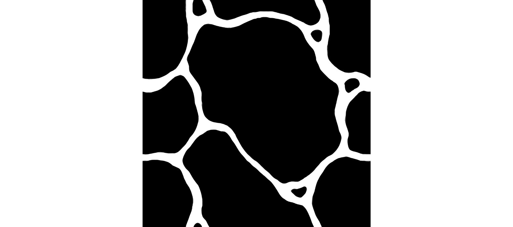
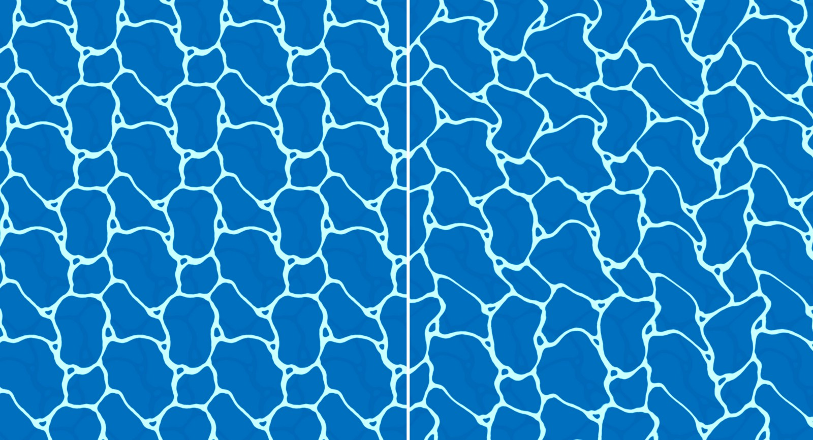
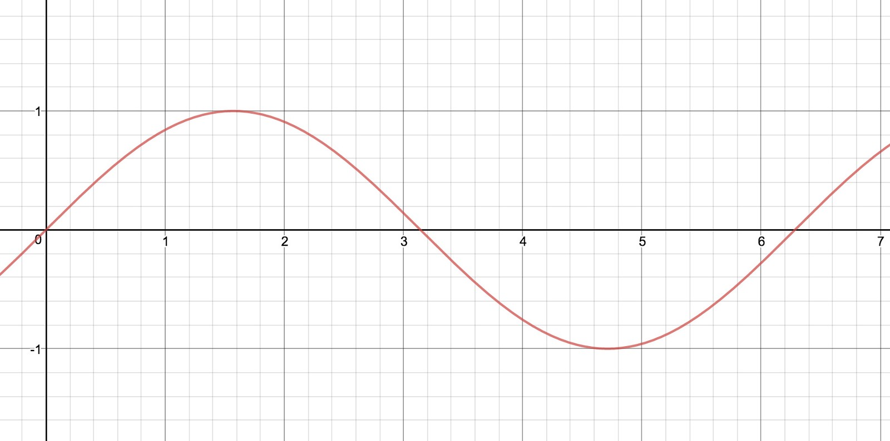
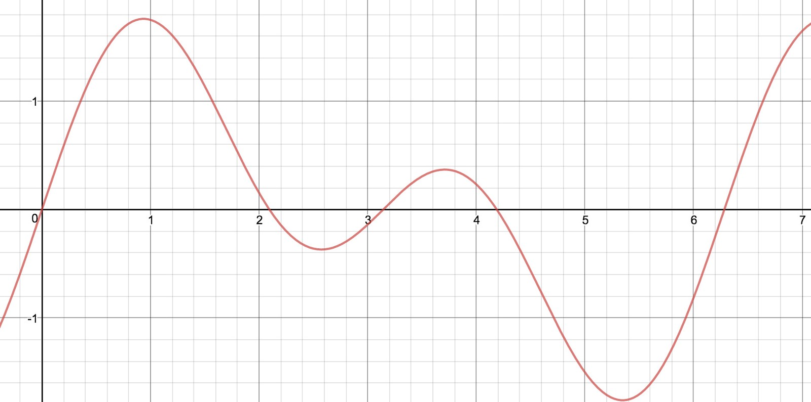
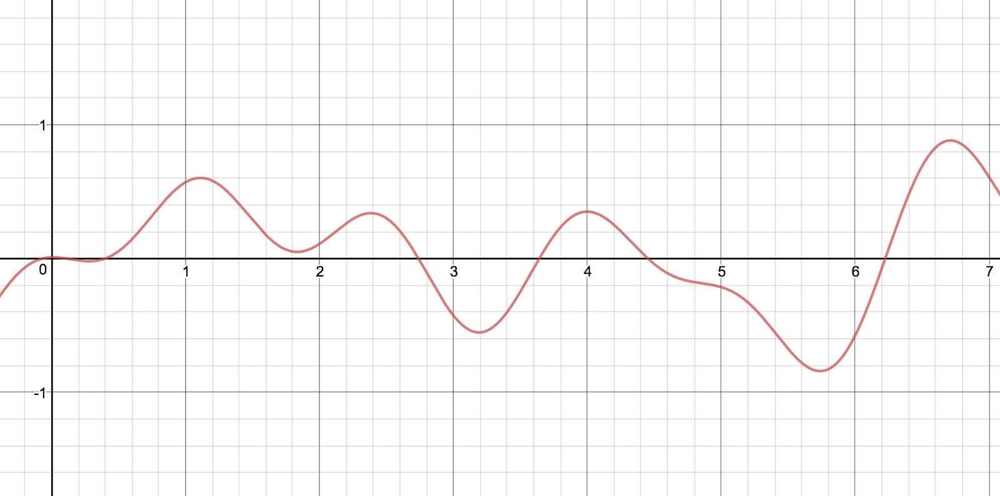

You spend a lot of time surrounded by it in the game, so obviously getting its look right would have been a major goal for the team.
Although there are two variations of oceans in Wind Waker, I find this version to be the most memorable and interesting. It has such a calming effect, and those foam lines were so handy for getting in the right spot to haul up treasure chests!
Here is my attempt at recreating it using Threejs.
For all of these experiments, although I don’t know the exact way that the original developers achieved the effect in-game, plus the pipeline I am using is vastly different to the Gamecube’s, I still believe the techniques used to recreate the effects will be close enough to shed insight on the clever thinking behind them!
This effect relies heavily on a simple little trick — compound sine curves. These are really useful little curves that can break up the patterns and help to create a more realistic aesthetic. Plus they can be used to create so many different effects — I’m finding more uses for them all the time. I’ll go through them in depth in just a moment.
To start with, here is the texture shape used in the game. Making gorgeous tileable assets that don’t seem repetitive is no easy task.

In a fragment shader, this texture is repeated many times. By starting with a base blue colour, I used the texture above as a mask to add the white colour onto the image — leaving blue where the texture is black. Then I repeated this, but with dark blue instead of white — however I also offset the texture lookup slightly, so that the white and blue lines didn’t fall on top of each other.
This result can be seen below on the left.
Ocean shader before and after sine-curve displacement
The original also had some visible rippling — warping the texture somewhat to break up the pattern even further. So to recreate this, I’ve use some compound sine curves to displace the texture lookup’s coordinates, as seen above on the right.
An added benefit of using sine curves for displacement, is that they animate so beautifully by simply throwing time into the equation.
So, to explain what compound sine curves are. Start with a sine curve.
y = sin(x)Sine curve
Although very beautiful, it is visibly regular and repetitive.
Now, simply combine several sine curves to compound them.
y = sin(x) + sin(2x)Simple compound sine curve
Straight away it looks a little more interesting, but still fairly symmetrical.
Here we take it another step further.
y = (sin(x) + sin(2.2x+5.52) + sin(2.9x+0.93) + sin(4.6x+8.94)) / 4More complex compound sine curve
Here, four sine curves have been used, each with a different scale and offset.
By changing the amount of sine curves used and the scale and offsets of each, the effect can be vastly different. By also adding a time variable into each sin curve, the line will animate, much like an ocean swell — ebbing and flowing.
So much can be done using this technique; it could be used as a simple noise alternative, to simulate natural phenomenon, or just to add some subtle movement.
In order to create the rising and falling of the ocean swell, we need to first understand a couple of facts about the ocean from the game.
From above it’s interesting to note that Link doesn’t visually move up and down with the ocean swell, he merely bobs around. Instead, it looks like the ocean itself, and the nearby island too, rise and fall to compensate. This could be achieved by attaching the ocean object to the character position.
Another important discovery is that the ocean geometry doesn’t shift with the boat’s movement, instead the texture and swell shifts across the plane, along with any other game objects.
To get started, I again used the compound sine curves technique to create the rising and falling of the waves, displacing the *y *value of the plane’s geometry. Here it is in one direction.
An obvious problem here is that the boat (white square) doesn’t stay on the surface. Instead of updating the boat’s position, let’s instead offset the ocean surface to account for it.
What I’m doing here is first calculating the surface height for each point along the curve, and then subtracting the surface height at the boat’s location, which is an easy computation if we assume that it is sitting at the point 0. As the boat’s position is the same for each calculation, this shifts the entire curve up and down.
float calculateSurface(float x) {
float y = (sin(x * 1.0 + time * 1.0) + sin(x * 2.3 + time * 1.5) + sin(x * 3.3 + time * 0.4)) / 3.0;
return y;
}
pos.y = calculateSurface(pos.x);
pos.y -= calculateSurface(0.0);Here is a 3D view of compound sine curves being applied in both directions.
I find it looks a little bit like a basic Perlin noise, however it is very efficient to compute.
An interesting note — as the gamecube didn’t support vertex shaders, these calculations would have been applied directly to the vertices’ positions on the CPU instead.
Using this simple technique also means that the surface height of the water at any location can be found simply by passing those values into the algorithm.
This could be applied to passing boats or debris. A floating object’s orientation could also be easily achieved from passing four points from the corners of the object into the algorithm.
To replicate movement around the ocean without actually moving the plane, the texture lookup can be offset by a movement vector, making the texture slide across the surface. The offset texture lookup could also be used as inputs for the plane’s displacement. Thanks to the infinite nature of sine curves, this would be a very simple solution to creating a seemingly never-ending ocean.
Now that was a rather basic effect, but I really love the simplicity of it — used to create a location that I spent countless hours exploring in the game as a child.
And here is the full recreation in a Codepen.
Onto the next analysis — Fire and Haze!